Para a gerente guiar o Samuel nas sessões de teste, uma instrução por vez, e para ele ensinar o Kaique.
Feito em 23/10/2026 pelo verificador, com a janela de verdade (ramo fase-1 em 5535187, já com a Fase 2),
aberta fora da tela do Samuel, com uma pasta de dados separada (nada dos livros, receitas ou configurações dele
foi tocado). Livro do percurso: "La vida eterna y La profundidad del alma.pdf" (180 folhas, o mesmo da sessão 0),
copiado para a pasta de trabalho; o original não foi aberto pelo programa.
Como foi feito: os cliques nos botões que o Samuel clica (caixinhas, "Conferir", ícones das duas colunas, "está certo", "próxima dúvida", "Confirmar e processar", "Processar", partes das Configurações) foram cliques do Windows; a barra de espaço e o Tab foram teclas do Windows. Os prints foram tirados da janela pelo Windows. Os nomes entre aspas são os que aparecem na tela, copiados da janela (não da memória do código). A janela tinha 1536 x 800 pontos, o tamanho da tela do Samuel com a barra de tarefas.
Cada parte tem: o print legendado, o nome na tela, onde fica, o que faz e, separado, pontos confusos. As respostas às três perguntas (a, b, c) estão logo abaixo, antes do mapa.
Não existe um botão que "rode o automático". O que o programa faz sozinho é escolhido na tela "Marque o que você quer fazer" e começa quando se clica "Conferir": ele olha o livro inteiro ("Olhando o livro...", uns 30 a 45 segundos neste livro) e já decide sozinho onde dividir, quanto girar, onde cortar e qual filtro usar. Depois disso, o Kaique só confere as páginas com dúvida e clica "Confirmar e processar". Se ninguém mexer em nada, sai como o programa decidiu.
Há três lugares com a palavra "automático", e nenhum deles roda nada:


Cuidado achado no caminho (defeito já registrado em 29/09 na Lista de bugs, ainda aberto): num livro que já passou pelo "Conferir" uma vez, voltar pelo "Rodar o automático...", marcar mais caixinhas (ex.: Endireitar e Cortar) e clicar "Conferir" não vale: a frase de baixo diz que vai endireitar e cortar, mas a tela de conferir volta igual, sem as ferramentas novas. Só muda se o número de páginas mudar (ex.: Dividir). Para o teste, usar sempre um livro novo ou "começar de novo" no menu do cartão.
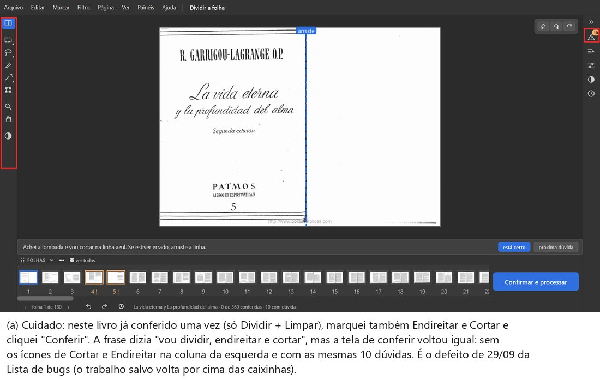
A coluna da esquerda só mostra as ferramentas das etapas marcadas. Reproduzi cinco combinações, cada uma num livro novo:
| Caixinhas marcadas | Ícones na coluna da esquerda | Páginas com dúvida |
|---|---|---|
| Dividir + Limpar (Cortar e Endireitar desmarcadas) | 9: Dividir, Retângulo, Laço, Pincel, Varinha, Mover a área, Zoom, Mão, Os quatro filtros | 10 |
| Dividir + Cortar | 2: Dividir, Cortar | — |
| Dividir + Endireitar | 2: Dividir, Endireitar | 58 |
| só Dividir | 1: Dividir | — |
| Dividir + Limpar + Endireitar + Cortar | 11 (todas) | 56 |
O print do Samuel tem dois ícones: a folha aberta (Dividir) e um retângulo inclinado (Endireitar), e o rodapé dele diz "58 com dúvida". As duas coisas batem exatamente com Dividir + Endireitar, com "Limpar a folha" e "Cortar as bordas" desmarcadas. Com Dividir + Limpar marcados apareceriam 9 ícones, não 2.
Provável causa: de fábrica, "Limpar a folha", "Endireitar" e "Cortar as bordas" já vêm marcadas, e caixinha marcada aparece só como um tique, sem quadrado (a desmarcada tem quadrado vazio). Quem clica em "Limpar a folha" achando que está marcando, na verdade desmarca. Sem "Limpar a folha", somem todas as ferramentas de marcar, o Zoom, a Mão e "Os quatro filtros". E os painéis (Para revisar, Automático, Propriedades, Filtro, Histórico) não sumiram: eles moram na coluna da direita e começam fechados.
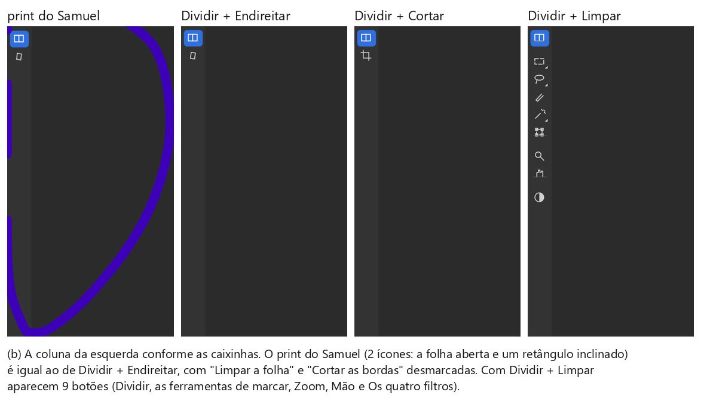

O deslocamento já está no PDF. A página 5, aberta direto do arquivo (sem o programa), já tem o texto da direita lá em cima, com "PRIMERA PARTE" cortado no alto, e a página da esquerda quase vazia. A tela "Dividir a folha" mostra a folha como ela é (só girada de pé). Não foi o programa.
Uma coisa a mais, vista nesta folha: o programa pôs a linha azul de dividir quase na beirada esquerda e a faixa avisa "Não tenho certeza de onde cortar. Confira a linha." (a miniatura 5 tem o "!" laranja). No print do Samuel a linha estava no meio.
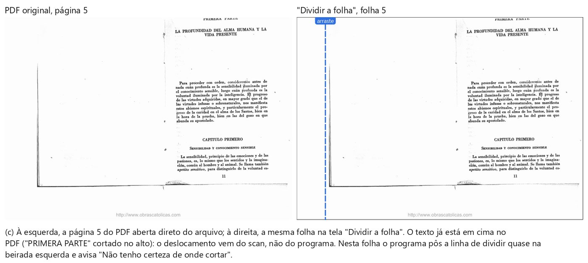
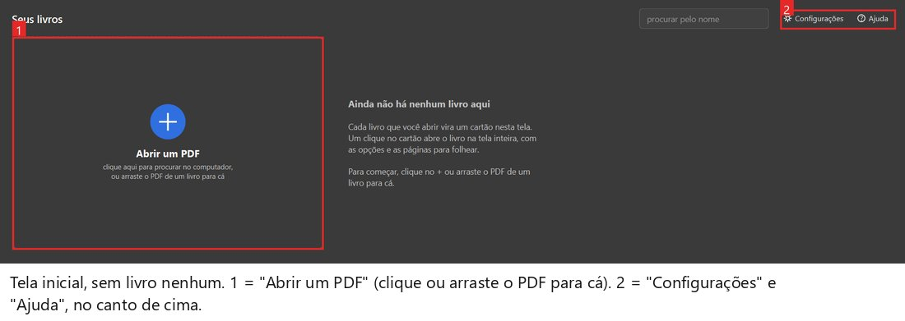

| Nome na tela | Onde fica | O que faz |
|---|---|---|
| "Abrir um PDF" / "Abrir um PDF novo" | primeiro quadro da grade, com o "+" azul | Clique: abre a janela do Windows para escolher o PDF. Também dá para arrastar o PDF para qualquer lugar da tela. Abrir leva para "Marque o que você quer fazer". |
| cartão do livro | ao lado do "+": capa, nome, "360 páginas · hoje", "0 de 360 conferidas" | Um clique: abre o livro na tela inteira. Duplo clique: continua o trabalho. Botão direito: o menu do livro. |
| "continuar" | botão azul pequeno em cima da capa, no canto | Vai direto para a tela de conferir, onde parou. |
| "procurar pelo nome" | campo no alto, à direita | Filtra os cartões pelo nome. |
| "Configurações" | alto, à direita | Abre as Configurações (parte 5). |
| "Ajuda" | alto, à direita | Abre a "Lista de atalhos" (F1). |
Menu do botão direito do cartão (o mesmo do "Mais..."): "continuar", "começar de novo", "renomear", "abrir a pasta de saída" (cinza até o livro gerar um PDF), "remover da lista".
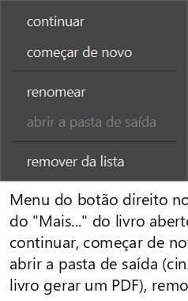
| Nome na tela | Onde fica | O que faz |
|---|---|---|
| "Voltar para os livros Esc" | 1ª linha, à esquerda | Volta aos cartões. |
| "Mais..." | 1ª linha, à direita | O mesmo menu do botão direito do cartão. |
| "Continuar" (azul) | 2ª linha, 1º botão | Abre a tela de conferir deste livro. |
| "Rodar o automático..." | 2ª linha, 2º botão | Leva para "Marque o que você quer fazer" deste livro. Não roda nada. |
| "Ver todas as páginas" | 2ª linha, 3º botão | A grade das folhas do PDF. |
| "Confirmar e processar..." | 2ª linha, 4º botão | Abre o trabalho e já pede a confirmação para gerar o PDF. |
| "Onde está: ..." | 2ª linha, à direita | O caminho do PDF no computador. |
| "Uma página", "Duas lado a lado", "Rolar sem parar", "Caber a página", "Caber a altura", "Caber a largura", "Tamanho real" | barra de baixo, no meio | Jeitos de ver as páginas. |
| "página 1 de 180 · ir para", "‹" "›" | canto de baixo, à direita | Andar pelas folhas. |
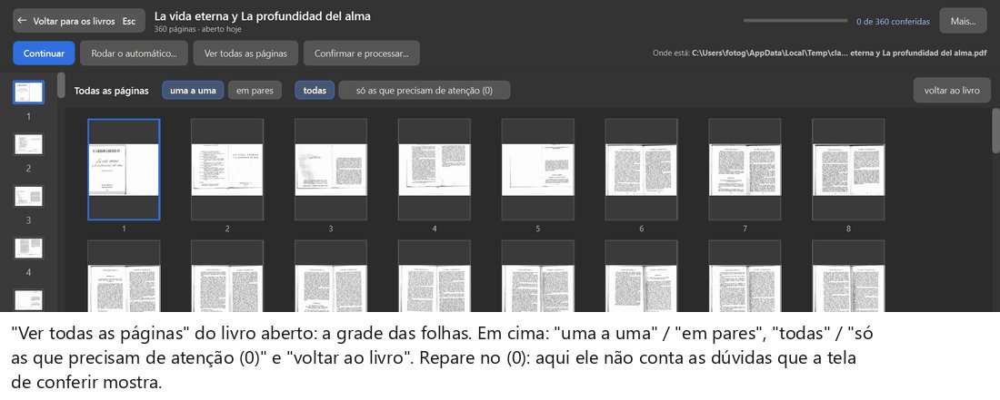
Pontos confusos — tela inicial e livro aberto
Aparece ao abrir um PDF novo, pelo "Rodar o automático..." e por Arquivo > "Voltar para as opções".
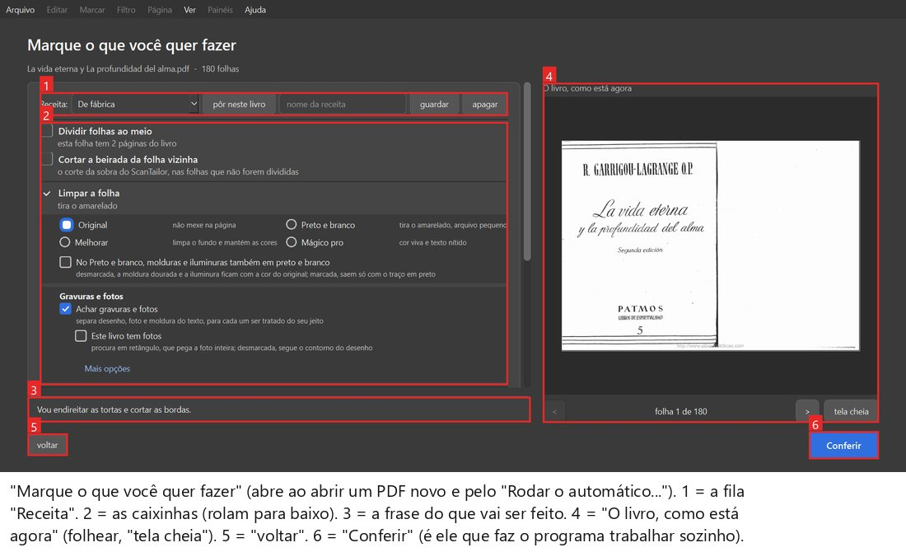

| Nome na tela | De fábrica | O que faz | O que liga/desliga depois |
|---|---|---|---|
| "Receita:" com "De fábrica", "pôr neste livro", "nome da receita", "guardar", "apagar" | De fábrica | Guarda as caixinhas desta tela com um nome e as põe de volta noutro livro. | Nada na tela de conferir. Não é automático. |
| "Dividir folhas ao meio" | desmarcada | Divide cada folha em duas páginas. Marcada, abre "Jeito de dividir:" (o do ScanTailor / o do Editor). | Liga o 1º ícone da esquerda, "Dividir a folha". |
| "Cortar a beirada da folha vizinha" | desmarcada | Corta a sobra da folha ao lado, nas folhas que não forem divididas. | — |
| "Limpar a folha" | marcada | Liga os filtros. Embaixo: Original (de fábrica, "não mexe na página"), Preto e branco, Melhorar, Mágico pro; "No Preto e branco, molduras e iluminuras também em preto e branco"; "Gravuras e fotos". | Liga as ferramentas de marcar (Retângulo, Laço, Pincel, Varinha, Mover a área), o Zoom, a Mão e "Os quatro filtros". Desmarcada, todas somem. |
| "Achar gravuras e fotos", "Este livro tem fotos", "Mais opções" | marcada / desmarcada | Procura desenhos e fotos para tratar à parte. "Mais opções": Sensibilidade, "Procurar também imagens claras", "Igualar a luz da página antes". | Só aparece com "Limpar a folha". |
| "Endireitar folhas tortas" | marcada | Endireita páginas inclinadas. Abre "Conta do endireitar:" (a do ScanTailor / a do Editor). | Liga o 3º ícone, "Endireitar". |
| "Cortar as bordas" | marcada | Tira a borda preta e a sombra do scanner. | Liga o 2º ícone, "Cortar as bordas". |
| "Cortar seguindo o conteúdo (como o ScanTailor)" | desmarcada | O corte abraça o que está impresso. | — |
| "Achar a página dentro da borda preta do scanner" | desmarcada | Abre "Cortar:" (até a moldura / só o preto) e (cortar fora / pintar de branco). | — |
| "Margens iguais em todas as páginas" | desmarcada | Abre as quatro margens e o alinhamento. | — |
| "Montar cadernos no tamanho do scan (sem A4, sem margem)" | desmarcada | Abre "páginas por caderno". | Muda a tela "Ficou pronto!". |
| frase de baixo (ex.: "Vou endireitar as tortas e cortar as bordas.") | faixa embaixo das caixinhas | Diz o que vai ser feito. | — |
| "O livro, como está agora", "‹ folha 1 de 180 ›", "tela cheia" | coluna da direita | Folhear o PDF antes de decidir. | — |
| "voltar" / "Conferir" | rodapé | "Conferir" faz o programa olhar o livro e decidir tudo sozinho, e abre a tela de conferir. | — |
Com o Preto e branco escolhido aparecem mais três: "Só as letras", "Escurecer sozinho a força do preto quando o texto sair falhado" e "Limpar a sujeira:".
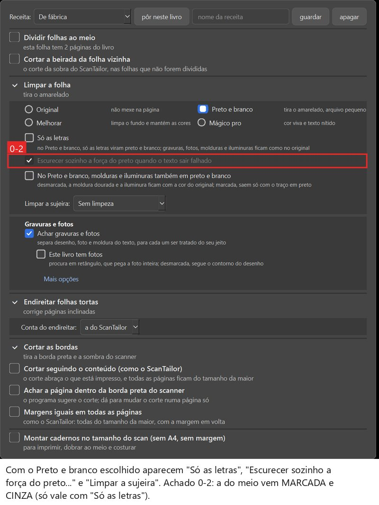
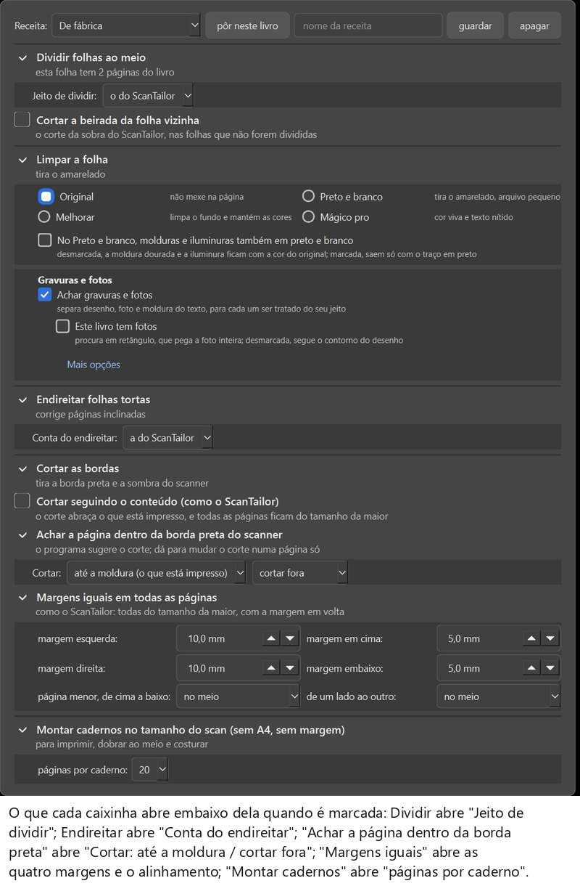
Pontos confusos — "Marque o que você quer fazer"
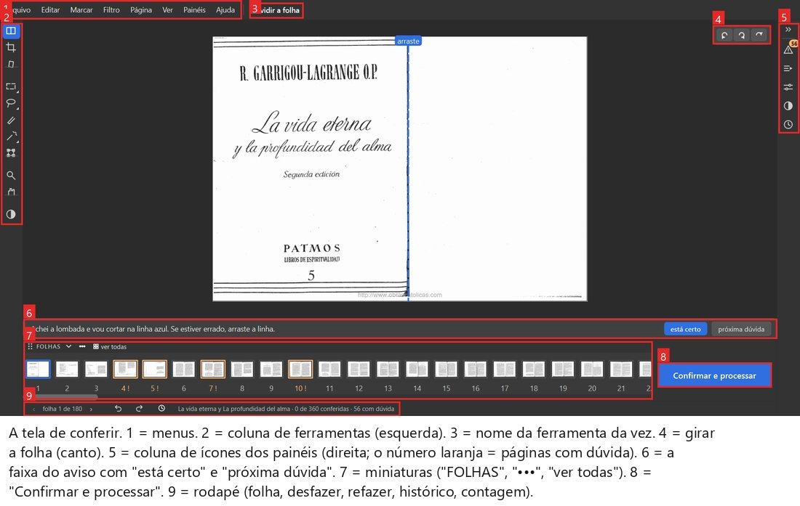
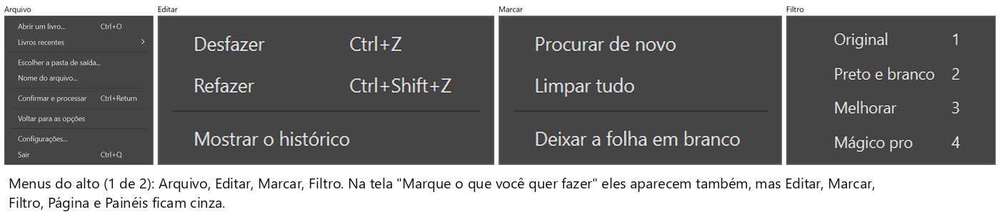
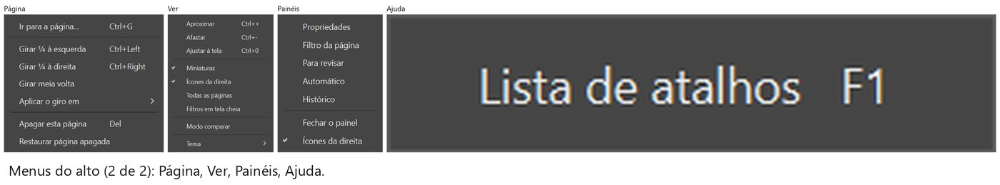
| Menu | Itens (como aparecem) |
|---|---|
| Arquivo | Abrir um livro... (Ctrl+O) · Livros recentes · Escolher a pasta de saída... · Nome do arquivo... · Confirmar e processar (Ctrl+Return) · Voltar para as opções · Configurações... · Sair (Ctrl+Q) |
| Editar | Desfazer (Ctrl+Z) · Refazer (Ctrl+Shift+Z) · Mostrar o histórico |
| Marcar | Procurar de novo · Limpar tudo · Deixar a folha em branco |
| Filtro | Original (1) · Preto e branco (2) · Melhorar (3) · Mágico pro (4) |
| Página | Ir para a página... (Ctrl+G) · Girar ¼ à esquerda (Ctrl+Left) · Girar ¼ à direita (Ctrl+Right) · Girar meia volta · Aplicar o giro em (só esta folha / todas as folhas / daqui em diante / só as pares / só as ímpares) · Apagar esta página (Del) · Restaurar página apagada |
| Ver | Aproximar (Ctrl++) · Afastar (Ctrl+-) · Ajustar à tela (Ctrl+0) · Miniaturas · Ícones da direita · Todas as páginas · Filtros em tela cheia · Modo comparar · Tema (Escuro / Cinza / Claro) |
| Painéis | Propriedades · Filtro da página · Para revisar · Automático · Histórico · Fechar o painel · Ícones da direita |
| Ajuda | Lista de atalhos (F1) |
Ao lado dos menus, em negrito, o nome da ferramenta da vez (ex.: "Dividir a folha").
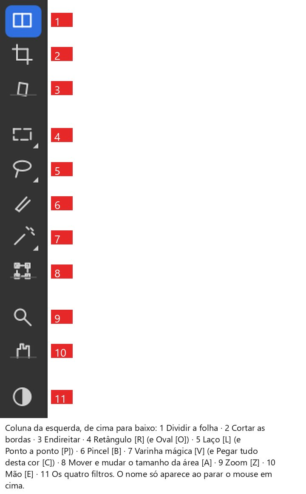
| Posição | Nome (balão do mouse) | O que faz | Aparece quando |
|---|---|---|---|
| 1º | Dividir a folha | "Arraste a linha azul para mudar onde a folha divide." | "Dividir folhas ao meio" marcada |
| 2º | Cortar as bordas | "Arraste o retângulo para mudar o corte da borda." | "Cortar as bordas" marcada |
| 3º | Endireitar | "Gire pela bolinha azul, ou desenhe a linha laranja em cima de uma linha do texto." | "Endireitar folhas tortas" marcada |
| 4º | Retângulo [R] (no mesmo botão: Oval [O]) | Marca uma área arrastando. | "Limpar a folha" marcada |
| 5º | Laço [L] (Ponto a ponto [P]) | Contorna uma área. | idem |
| 6º | Pincel [B] | Pinta por cima. | idem |
| 7º | Varinha mágica [V] (Pegar tudo desta cor [C]) | Pega a mancha de uma cor. | idem |
| 8º | Mover e mudar o tamanho da área [A] | Move/aumenta uma área marcada. | idem |
| 9º | Zoom [Z] | Aproxima (com Alt, afasta). | idem |
| 10º | Mão [E] | Anda pela página aproximada. | idem |
| 11º | Os quatro filtros | A mesma página nos quatro filtros; um clique escolhe. | "Limpar a folha" marcada (ou nenhuma outra etapa) |
Escolher Dividir, Cortar ou Endireitar abre sozinho o painel Propriedades (à direita), onde ficam os botões delas.
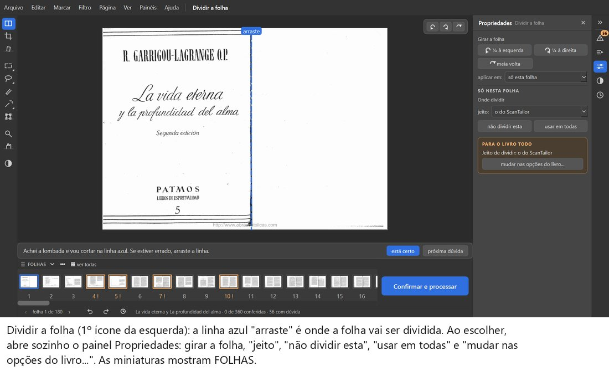
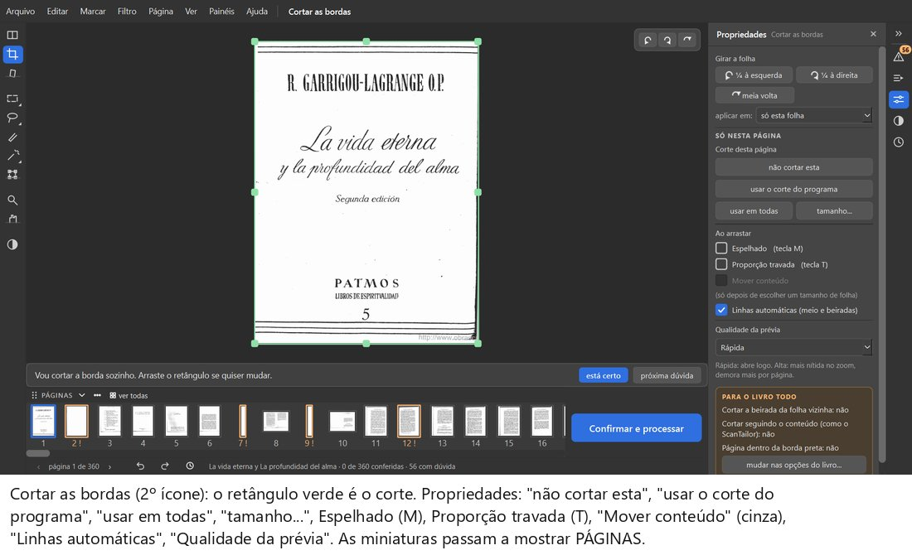
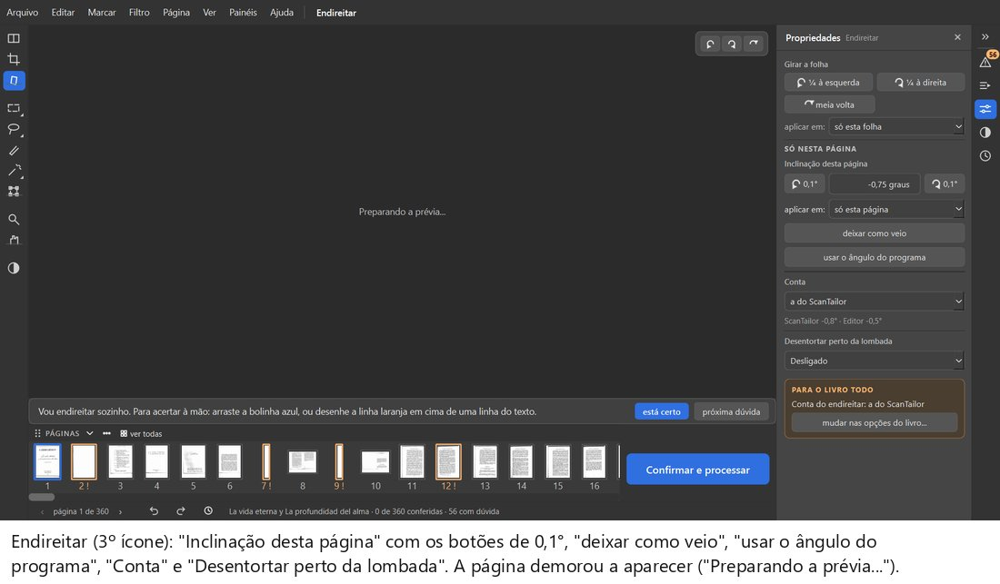
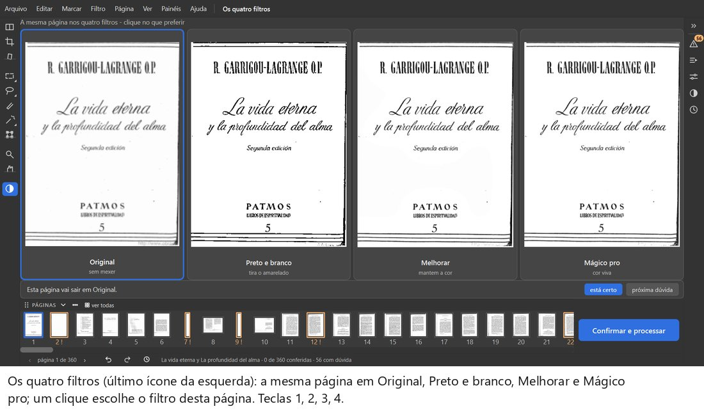
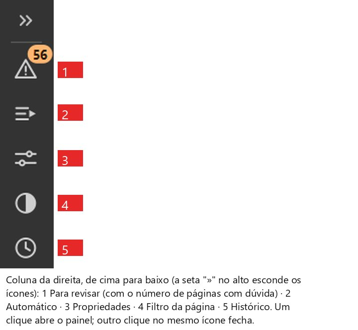
| Posição | Nome (balão) | O que tem dentro |
|---|---|---|
| no alto (sem número) | seta "»" ("esconder os ícones") | Esconde a coluna. |
| 1º | Para revisar (com o número laranja, ex.: 56) | A lista das páginas com dúvida, "Por página" ou "Por motivo"; clique numa leva até ela; "ver a lista...", "está bom em tudo". |
| 2º | Automático | Só mostra as etapas ligadas neste livro e a escolha de cada uma; botão "Voltar para as opções". |
| 3º | Propriedades | Muda conforme a ferramenta: girar a folha e "aplicar em"; os botões de Dividir/Cortar/Endireitar; com as de marcar, "Marcar como", "Marcação desta página", "Foto" e "Área". Embaixo, "PARA O LIVRO TODO" com "mudar nas opções do livro...". |
| 4º | Filtro da página | Os quatro filtros desta página (teclas 1 a 4), "Ajuste", "Só as letras", "Limpar a sujeira" e "Mais ajustes" (só fora do Original), "Só neste pedaço", "apagar página", "Aplicar em: só nesta / todas / daqui em diante"; o ícone de quadrado no título abre os filtros em tela cheia. |
| 5º | Histórico | "Desfazer", "Refazer" e a lista do que foi feito. |
Um clique no ícone abre o painel; outro clique no mesmo ícone fecha (testado com clique do Windows nos cinco). Todos começam fechados ao abrir um livro.
Fica logo embaixo da página. À esquerda, a frase do que o programa vai fazer nesta folha; à direita, "está certo" (azul) e "próxima dúvida". Quando há dúvida, a faixa fica laranja e aparece um botão laranja com a sugestão (ex.: "aceitar o corte").
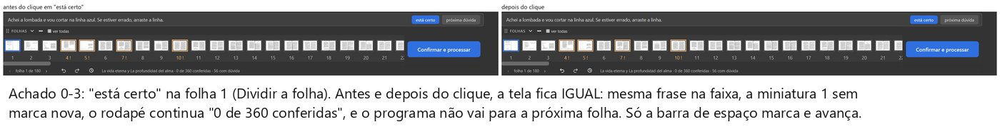
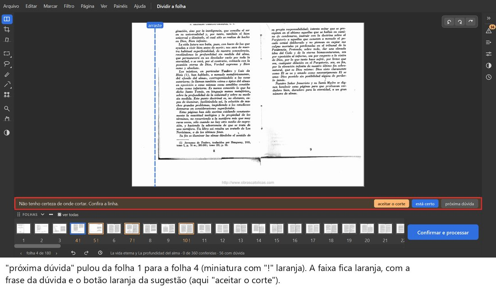
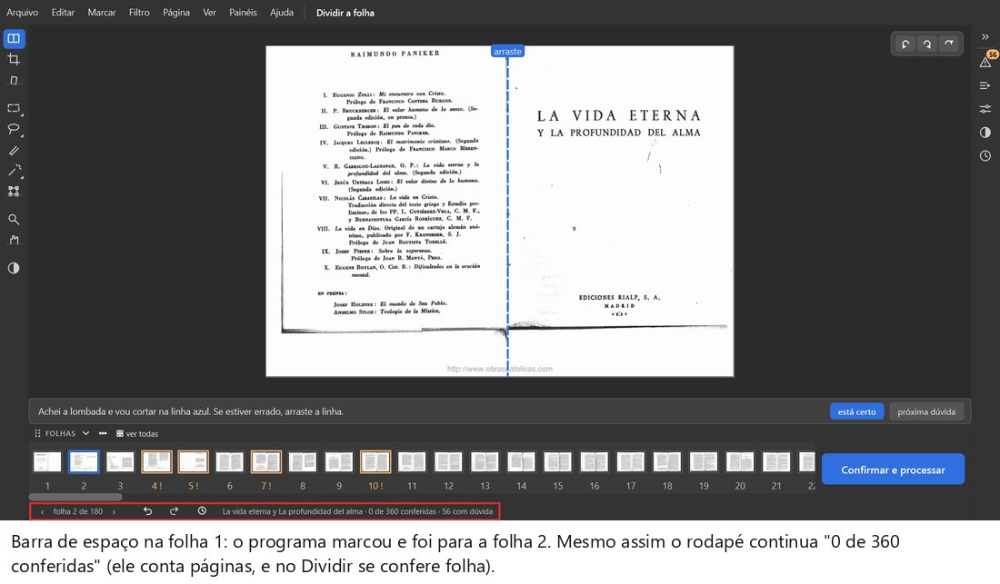
| Nome na tela | Onde fica | O que faz |
|---|---|---|
| "FOLHAS" (no Dividir) / "PÁGINAS" (nas outras ferramentas), com "⌄" | cabeçalho das miniaturas, à esquerda | A seta fecha as miniaturas. |
| "•••" | ao lado | Balão: "Mais opções das miniaturas" (não aberto no teste). |
| "ver todas" | ao lado | A grade de todas as páginas, com as de dúvida em laranja e o motivo; "voltar ao trabalho". |
| miniaturas com número; "!" laranja = dúvida | faixa de baixo | Um clique vai para a folha/página. |
| "Confirmar e processar" (azul, grande) | à direita das miniaturas | Ver parte 4. |
| "‹ folha 1 de 180 ›" | rodapé, à esquerda | Andar uma folha (setas do teclado também). |
| desfazer, refazer, relógio | rodapé | Desfazer (Ctrl+Z), Refazer (Ctrl+Shift+Z), abrir o Histórico. |
| "La vida eterna... · 0 de 360 conferidas · 56 com dúvida" | rodapé | Contagem do livro. |
| girar (três botões) | canto de cima, à direita da página | ¼ à esquerda, ¼ à direita, meia volta. |
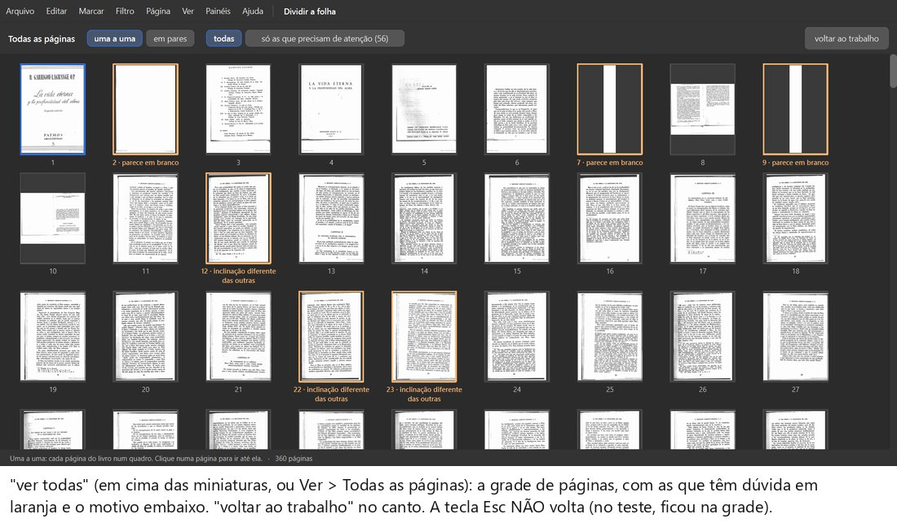
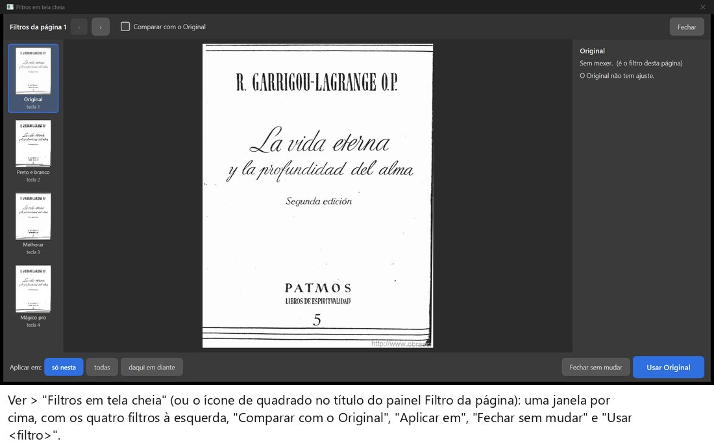
| Tecla | O que faz |
|---|---|
| Barra de espaço | Marcar como certo e avançar |
| Tab | Ir para a próxima dúvida |
| Seta esquerda / direita | Página anterior / próxima |
| 1, 2, 3, 4 | Original, Preto e branco, Melhorar, Mágico pro |
| Del | Apagar esta página |
| Ctrl+Z / Ctrl+Shift+Z | Desfazer / Refazer |
| Ctrl+G | Ir para a página... |
| Ctrl+Left / Ctrl+Right | Girar ¼ à esquerda / à direita |
| Ctrl++ / Ctrl+- / Ctrl+0 | Aproximar / Afastar / Ajustar à tela |
| Ctrl+Return (Enter) | Confirmar e processar |
| Ctrl+O / Ctrl+Q | Abrir um livro / Sair |
| R, O, L, P, B, V, C, A, Z, E | Retângulo, Oval, Laço, Ponto a ponto, Pincel, Varinha, Pegar tudo desta cor, Mover a área, Zoom, Mão |
| M / T | Recorte: espelhado / proporção travada |
| F1 | Lista de atalhos |
Pontos confusos — tela de conferir
Caminho: "Confirmar e processar" (botão azul da tela de conferir, ou Ctrl+Enter) → se houver dúvidas, a janela "Antes de processar" → a janela "Confirmar e processar" (onde salvar) → "Processar" → "Processando o livro..." → "Ficou pronto!".
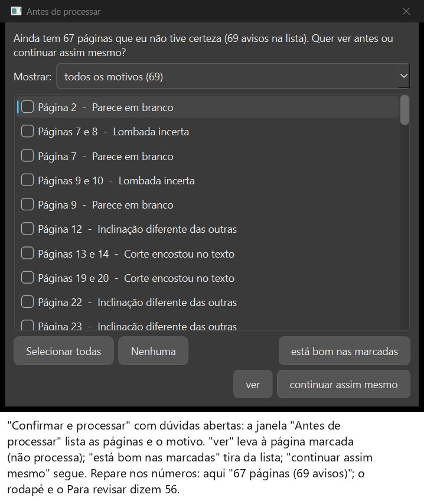
| Nome na tela | O que faz |
|---|---|
| "Mostrar:" (todos os motivos / um motivo) | Filtra a lista. |
| caixinha em cada linha, "Selecionar todas", "Nenhuma" | Escolhe linhas. |
| "está bom nas marcadas" | Tira as marcadas da lista (aceita como está). |
| "ver" | Fecha e vai para a página escolhida; não processa. |
| "continuar assim mesmo" | Segue para onde salvar. |
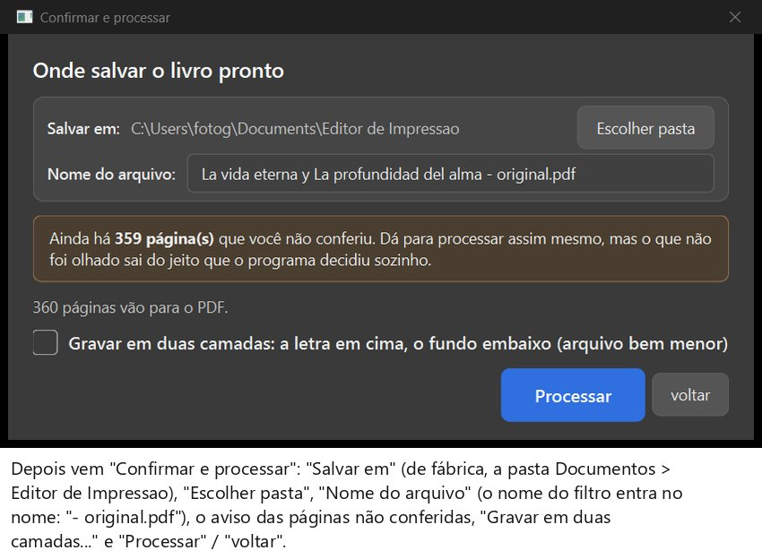
| Nome na tela | O que faz |
|---|---|
| "Salvar em:" e "Escolher pasta" | A pasta do PDF pronto (de fábrica, Documentos > Editor de Impressao). |
| "Nome do arquivo:" | De fábrica, o nome do livro com o filtro ("- original.pdf"). |
| aviso laranja | "Ainda há 359 página(s) que você não conferiu..." |
| "Gravar em duas camadas: a letra em cima, o fundo embaixo (arquivo bem menor)" | desmarcada de fábrica. |
| "Processar" / "voltar" | Começa / volta para a conferência. |
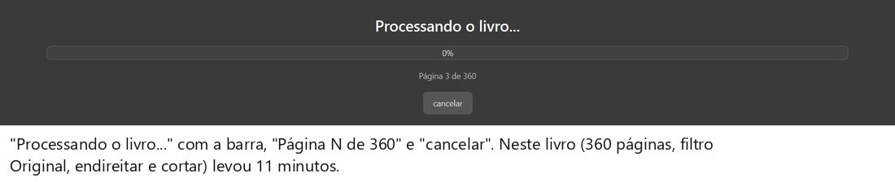
Neste livro, com Dividir + Endireitar + Cortar e filtro Original, processar levou 11 minutos e o PDF saiu com 360 páginas e 287,4 MB.

| Nome na tela | O que faz |
|---|---|
| "abrir a pasta" | Abre a pasta do PDF no Windows (não testado: abriria na tela do Samuel). |
| "imprimir agora" | Manda o PDF direto para a impressora padrão do Windows, sem janela de impressão. (Não testado, de propósito.) |
| "montar para imprimir em A4 (com margens)..." | Abre a janela "Montar para imprimir". |
| "fazer outro" | Volta para a tela inicial. |
Os cadernos "no tamanho do scan" só saem se a caixinha "Montar cadernos no tamanho do scan (sem A4, sem margem)" estava marcada; aí esta tela mostra também "Como imprimir:". Neste percurso ela estava desmarcada (como vem de fábrica).

"Montar para imprimir": "Formato" (Livreto: A4 deitada, duas páginas por lado, na ordem dos cadernos), "Papel", "Folha", "Tamanho", "Escala personalizada", "Rotação automática", "Centralizar automático", "Margens da encadernação: 1,3 cm da beirada do papel e 1 cm na costura", "Escala de cada lado"; botões "gravar o arquivo para imprimir", "mandar para a impressora", "cancelar", "fechar".
Pontos confusos — processar e imprimir
Configurações: botão "Configurações" no alto da tela inicial, ou Arquivo > "Configurações...". As partes ficam numa lista à esquerda; um clique em cada uma mostra o conteúdo à direita; "Fechar" embaixo.
| Parte | O que tem |
|---|---|
| Aparência | "As cores do programa. Vale na hora, em todas as telas." Escuro · Cinza (de fábrica) · Claro. |
| Atalhos de teclado | Cada atalho com a tecla; clique e aperte a nova. |
| Velocidade (nova) | "Páginas ao mesmo tempo:" Todos os núcleos do processador (16) · Uma página por vez (como antes) · 2 · 4 · 8 páginas. "Só muda a velocidade, nunca o resultado." |
| Medidas e receitas (nova) | "Medidas em:" centímetros · milímetros · polegadas. "Receita de todo livro novo:" De fábrica. |
| Impressão (nova) | "Margem da encadernação:" 10,0 mm. "A impressora não imprime:" 3,0 mm da beirada. |
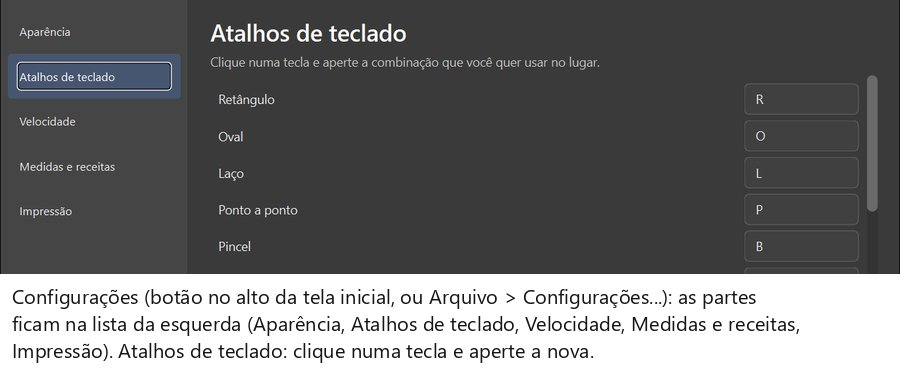
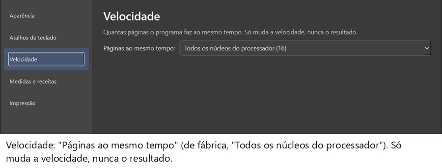
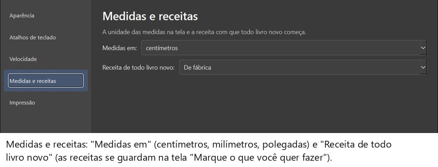
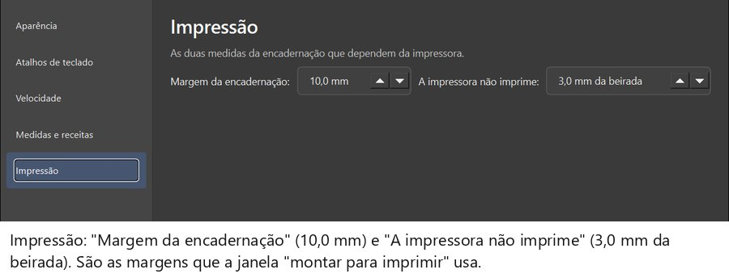
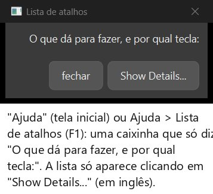
Painel "Filtro da página" (4º ícone da coluna da direita, desenho de meia lua) → parte "Mais ajustes" (abre clicando na seta) → última linha: "Igualar a luz da página", "Suavizar as letras" e "Tirar o chuvisco" (número de 0 a 100); o balão do mouse explica cada um. Só existe em página com Preto e branco, Melhorar ou Mágico pro; no Original não há "Mais ajustes". "Suavizar" só no Preto e branco.

Escolher uma ferramenta de marcar na coluna da esquerda (ex.: Retângulo, 4º ícone) → painel "Propriedades" (3º ícone da direita) → rolar até o fim, depois de "Marcar como", "Marcação desta página" e "Foto" → "Área": "Mostrar as áreas achadas" e os botões da área escolhida (com a ferramenta "Mover e mudar o tamanho da área", tecla A).
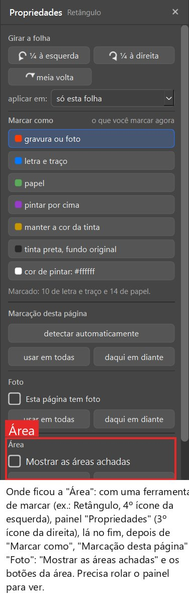
Pontos confusos — Configurações, Luz e Área
relatorios/testes-guiados/mapa-do-programa/mapa.md (e .html, .pdf).relatorios/testes-guiados/mapa-do-programa/prints/.D:\programas\EditorImpressao-arquivos\mapa-do-programa-prints\brutos\ (textos-p1.txt a textos-p5.txt têm cada
botão, caixinha e balão com a posição na janela).relatorios/testes-guiados/mapa-do-programa/roteiros/ (p1 a p5,
p1b_icones_da_esquerda.py para o achado 0-4, montar_prints.py para os recortes).Editor de Impressão · gerado em 23/10/2026 às 17:30